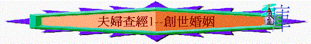

引言：記不記得在婚禮中，牧者對你們的訓勉？
一．「遇見配偶」（創2:18-20）
1.神為何給亞當預備配偶？
一個人有什麼不好的地方？
2.「配偶」這字有什麼意思？
和其它動物有什麼不同地方，特別之處？ 配偶又是否男性的助手，身份比男性低？
3.神為何只造一個配偶，不多造幾個幫助亞當？
4.另外，有人認為只有亞當與夏娃的婚姻是神配合的，其餘的是在聖經原則下，人用自由選擇下而結合的，你同意這看法嗎？
5.神設立婚姻的目的何在？
你認為配偶如何彼此幫助完成神設立婚姻的目的？
6.在實際生活中，你的配偶又如何幫助你？
他/她又有什麼特別之處是其他人不可取代的？
二．「成為一體」(創2:21-25)
1.神用亞當的一條肋骨造女人，有什麼含意？
「骨中的骨」「肉中的肉」又可代表什麼？
2.「離開父母」又是什麼意思？
3.在聖經中，「二人成為一體」代表什麼？
4.試分享你們婚後成為一個獨特新的家庭，「離開父母」之最初感受，是否適應？
後來如何？
參考經文:
[創
2:18-創 2:25]
C:\BST\ASV.BT
[18]And Jehovah God said, It is not good that the man
should be alone; I will make him a help meet for him.
[19]And out of the ground Jehovah God formed every
beast of the field, and every bird of the heavens; and brought them unto the man
to see what he would call them: and whatsoever the man called every living
creature, that was the name thereof.
[20]And the man gave names to all cattle, and to the
birds of the heavens, and to every beast of the field; but for man there was not
found a help meet for him.
[21]And Jehovah God caused a deep sleep to fall upon
the man, and he slept; and he took one of his ribs, and closed up the flesh
instead thereof:
[22]and the rib, which Jehovah God had taken from the
man, made he a woman, and brought her unto the man.
[23]And the man said, This is now bone of my bones,
and flesh of my flesh: she shall be called Woman, because she was taken out of
Man.
[24]Therefore shall a man leave his father and his
mother, and shall cleave unto his wife: and they shall be one flesh.
[25]And they were both naked, the man and his wife,
and were not ashamed.
[瑪
2:14-瑪 2:15]
[14]你們還說，這是為什麼呢•因耶和華在你和你幼年所娶的妻中間作見證•她雖是你的配偶，又是你盟約的妻，你卻以詭詐待她•
[15]雖然神有靈的餘力能造多人他不是單造一人麼•為何只造一人呢•乃是他願人得虔誠的後裔•所以當謹守你們的心，誰也不可以詭詐待幼年所娶的妻•
[太
19:3-太 19:6]
[3]有法利賽人來試探耶穌說，人無論什麼緣故，都可以休妻麼•
[4]耶穌回答說，那起初造人的，是造男造女，
[5]並且說，『因此，人要離開父母，與妻子連合，二人成為一體•』這經你們沒有念過麼•
[6]既然如此，夫妻不再是兩個人，乃是一體的了•所以
神配合的，人不可分開•
[可
10:6-可 10:9]
[6]但從起初創造的時候，神造人是造男造女•
[7]因此人要離開父母，與妻子連合，二人成為一體•
[8]既然如此，夫妻不再是兩個人，乃是一體的了•
[9]所以
神配合的，人不可分開•
[林前
6:15-林前 6:17]
[15]豈不知你們的身子是基督的肢體麼•我可以將基督的肢體作為娼妓的肢體麼•斷乎不可•
[16]豈不知與娼妓聯合的，便是與他成為一體麼•因為主說，『二人要成為一體』•
[17]但與主聯合的，便是與主成為一靈•
[林前
11:8-林前 11:12]
[8]起初，男人不是由女人而出•女人乃是由男人而出•
[9]並且男人不是為女人造的•女人乃是為男人造的•
[10]因此，女人為天使的緣故，應當在頭上有服權柄的記號•
[11]然而照主的安排，女也不是無男，男也不是無女•
[12]因為女人原是由男人而出，男人也是由女人而出•但萬有都是出乎神•
[弗
5:29-弗 5:31]
[29]從來沒有人恨惡自己的身子，總是保養顧惜，正像基督待教會一樣•
[30]因我們是他身上的肢體•﹝有古卷在此有就是祂的骨祂的肉﹞•
[31]為這個緣故，人要離開父母，與妻子連合，二人成為一體•